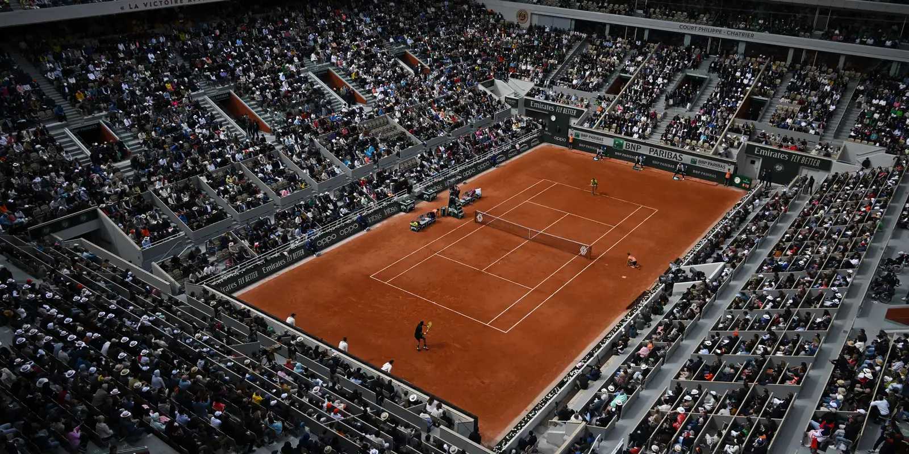

Roland Garros é um dos quatro torneios do Grand Slam do tênis e o mais famoso disputado em quadras de saibro. Realizado em Paris, França, desde 1891, é conhecido por exigir resistência e técnica dos jogadores, devido à lentidão da quadra.
O torneio recebe esse nome em homenagem a Roland Garros, um aviador francês. É um dos eventos mais tradicionais e prestigiados do esporte mundial.
 Voltar para a Página Principal© 2025 Tennis Club - All rights reserved.